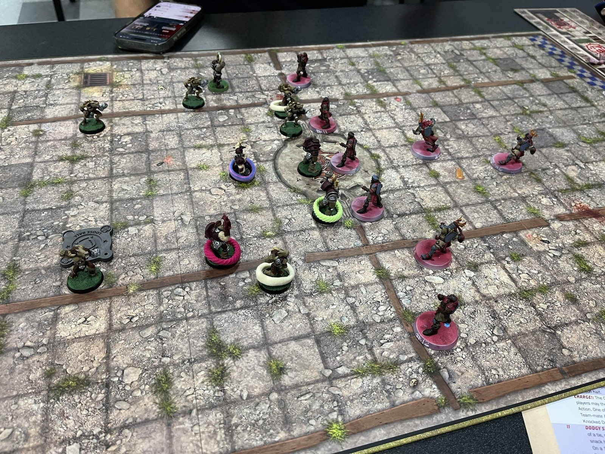
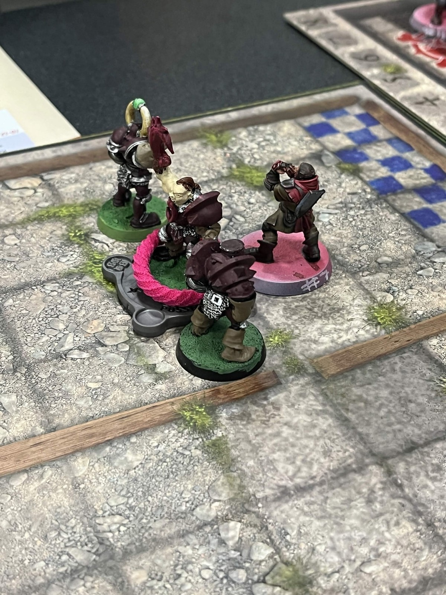
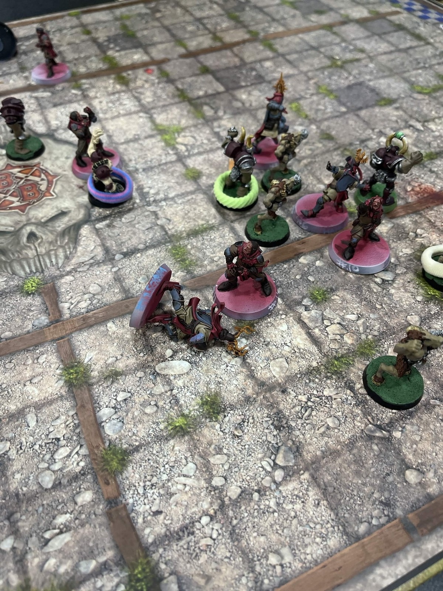

Grenadiers 0–2 Monarchia Marauders
🏈 THE QUEST FOR THE GRAIL GOT… VIOLENT. 🐇💀
Matchday 2 for the Holy Hand Grenadiers, and my second-ever Blood Bowl game was a pretty effective lesson in what happens when Bretonnians meet Chaos Chosen.
Monarchia Marauders 2, Holy Hand Grenadiers 0.
It was pouring rain, the ball apparently had been coated in butter, and Rogerin D’Armignac somehow managed three completions while repeatedly failing to pick up the ball WITH Sure Hands. He earned MVP and a new Leader skill, so we’re choosing to focus on the positives. 😂
Meanwhile, Kor the Cunning spent the afternoon turning my roster into a casualty ward. By the final drive I had four players left on the pitch, two Marauders had been ejected for fouling, and we somehow avoided the mercy rule. I’m counting that as a moral victory.
And the Grenadiers themselves are progressing too. Still WIP, but there’s a noticeable jump from the basic base coats of Matchday 1. The plan is still to keep painting between games, so hopefully by the end of the season they’ll look considerably better…
…even if there are considerably fewer of them standing.
1-1. We live to ride another day. 🏆🐇
#BloodBowl #BloodBowlCommunity #MiniaturePainting #WIPMiniatures #TabletopGaming